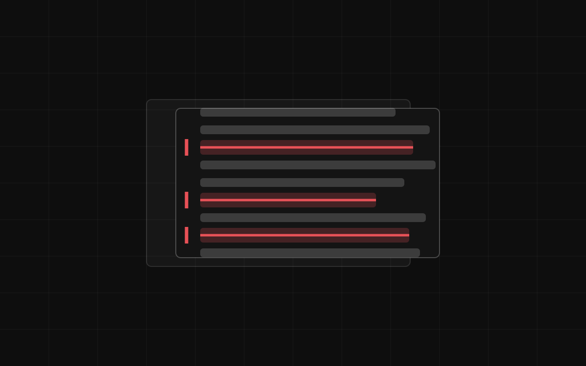
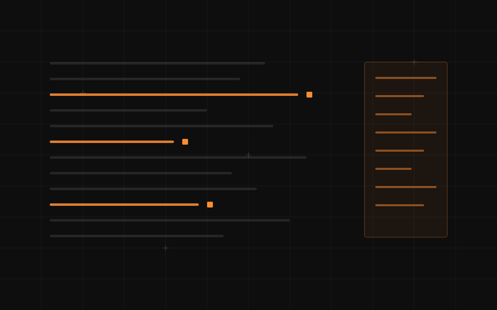
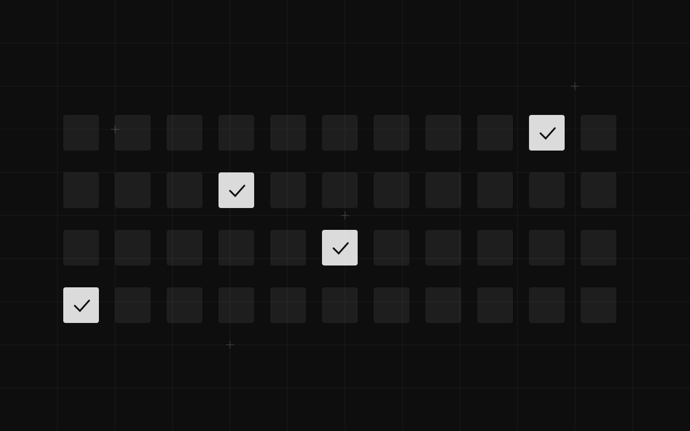
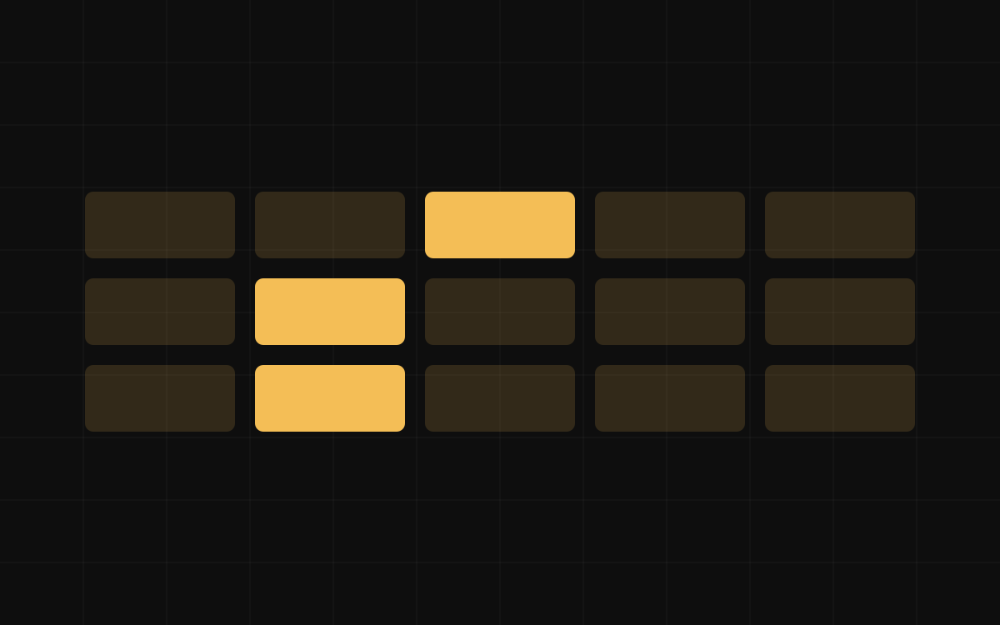
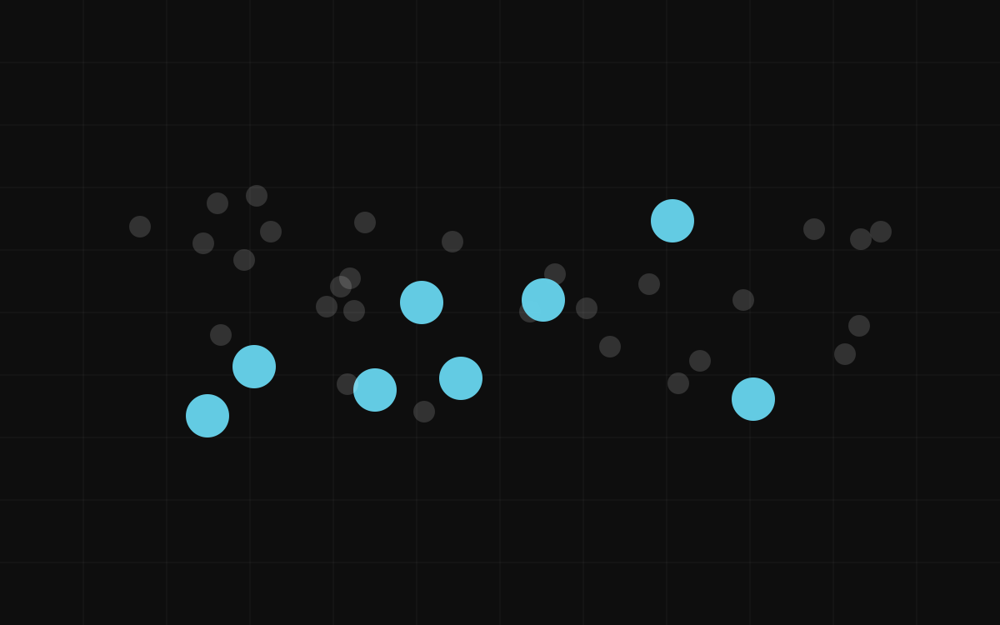
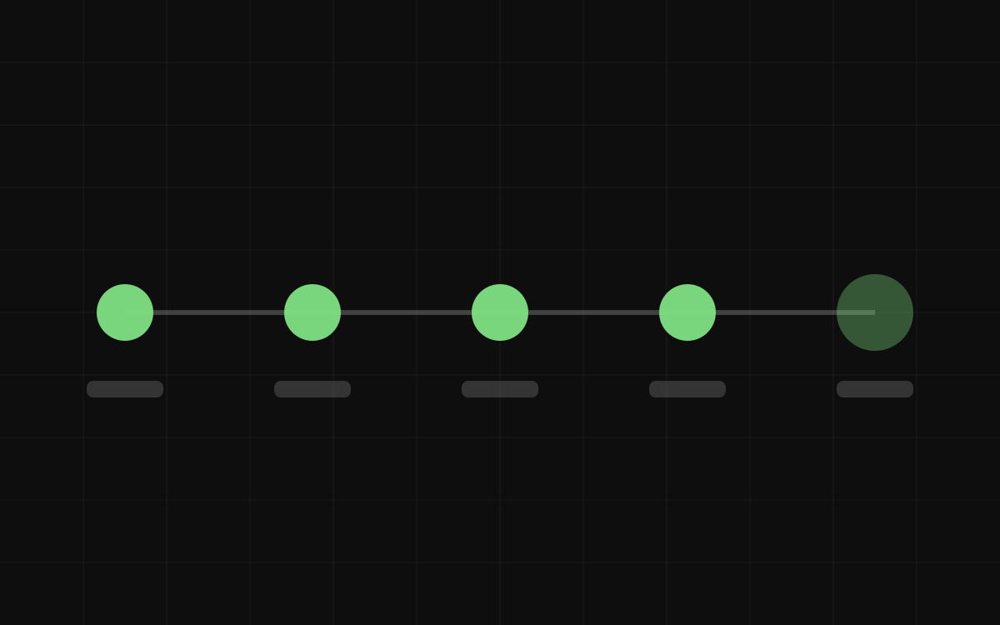

Anwälte
Der Vertrag ist schon markiert, wenn Sie ihn öffnen.
Wir nehmen neue Kunden an
Dinobridge baut kleine KI-Werkzeuge für Praxen, Teams und Selbstständige. Wir übernehmen den Papierkram, das Sortieren und das Nachfassen, die Ihre Abende auffressen. Den Teil, der Ihr Urteil braucht, fassen wir nicht an. Jede Entscheidung bleibt bei Ihnen.
Berlin · inhabergeführt, vom ersten Gespräch bis zur Übergabe

Der Vertrag ist schon markiert, wenn Sie ihn öffnen.

Dreißig Menschen sind über diesen Weg in Arbeit.

Zwei Professuren kamen von nahezu null Forschungsstunden auf acht bis zwölf pro Woche.

Aus sechs Stunden zwischen Dreh und Veröffentlichung werden unter zwei.

Es geht nicht darum, Ihnen mehr Wohnungen zu zeigen, sondern weniger.

Das Werkzeug findet den Beleg. Sie geben die Note.

Nichts Klinisches. Keine Ausnahmen, und wir haben deswegen Aufträge abgelehnt.

Wenn ein Scout etwas sehen will, darf es nicht vier Tage dauern.

Es liest das ganze Feedback und schreibt die Tickets. Was gebaut wird, entscheiden Sie.
Zwei bis fünf Tage neben Ihrer tatsächlichen Arbeit. Kein Workshop, kein Fragebogen. Das Postfach, die Ordnernamen, die Klebezettel, der Behelf, der Ihnen ein bisschen peinlich ist. Der Behelf ist meistens die Stelle, an die das Werkzeug gehört.
Eine Seite, die sagt, was das Werkzeug übernimmt und was bei Ihnen bleibt, Ihnen vorgelesen. Macht Sie etwas auf der Seite „übernimmt“ unruhig, haben Sie recht, und wir verschieben es. Diese Seite ist der Vertrag.
Keine Plattform. Ein Werkzeug, das Ihnen die Routinearbeit vom Schreibtisch nimmt. Es ist in Wochen fertig, nicht in Quartalen, und es erledigt eine Sache so vollständig, dass Sie aufhören, daran zu denken.
Sie können die Regeln ohne uns ändern: die Filter, die Grenzwerte, die Vorlagen, die Gründe, aus denen etwas abgelehnt wird. Braucht ein Werkzeug uns dauerhaft, haben wir es falsch gebaut.
Was es kostet Jedes Projekt ist anders, deshalb gibt es keine Preisliste. Nach dem kostenlosen Erstgespräch bekommen Sie ein klares Festpreisangebot, bevor Sie sich zu irgendetwas verpflichten. Die meisten Projekte dauern etwa vier Wochen vom ersten Besuch bis zur Übergabe.
Welcher Teil Ihrer Woche wiederholt sich, und welcher braucht Sie? ↗
Dinobridge hilft Praxen, Teams und Selbstständigen, die Routinearbeit vom Schreibtisch zu bekommen. Fast niemand kommt zu uns und fragt nach KI. Man kommt, weil ein Teil der Woche unerträglich geworden ist. Wir setzen uns in diese Woche, bis wir genau sehen, welcher Teil sich wiederholt und welcher das eigene Urteil braucht, und dann bauen wir nur für den Routineteil. Diese Kombination ist seltener, als sie klingt: Die meisten, die solche Werkzeuge bauen können, hören das Problem nicht, und die meisten, die das Problem hören, können nicht bauen. Wir machen beides. Wir hören zu, wie Sie ohnehin arbeiten, bauen oder erklären genau so viel, und sagen Ihnen klar, wenn KI sich für Sie nicht rechnet.
Dinobridge gehört Moha Aghanoori und wird von ihm geführt. Er bringt rund acht Jahre Berufserfahrung mit, davon etwa fünf Jahre mit Schwerpunkt KI. Neben Dinobridge betreibt er in einem Unternehmen ein KI-System, das eine echte Rechtsabteilung jeden Tag nutzt. Diese Mischung merkt man der Arbeit an: praktischer Rat in klarer Sprache, Werkzeuge, die für Ihren Betrieb gebaut sind und nicht für die Technik, und ein Inhaber, der vom ersten Gespräch bis zur Übergabe persönlich die Verantwortung für jedes Projekt trägt.
Keine Zielgruppe. Das sind die Berufe, in deren Arbeitswoche wir schon gesessen haben, eine Person nach der anderen. Wählen Sie den, der Ihrem am nächsten kommt.
Ihr Beruf ist nicht dabei? Es passt mit großer Wahrscheinlichkeit trotzdem. Fragen Sie uns.
Allein das Versionsproblem hat uns Abende gekostet — Vertrag_final_final_v3, und niemand konnte sagen, welcher unterschrieben wurde. Im ersten Monat hat er nur Eingang und Ablage ausgeliefert und dann aufgehört, was ich seltsam fand, bis ich verstand, dass es Absicht war. Die Durchsicht kam später, und jeder einzelne Vorschlag kommt in Word mit einer Begründung an, und ich nehme jeden selbst an oder verwerfe ihn. Er wurde um einen „Alle übernehmen“-Knopf gebeten und hat abgelehnt — hätte er ihn gebaut, hätte ich nicht weiter mit ihm gearbeitet.
Ich hatte hundertachtzig Bewerbungen geschickt und die Antworten irgendwann nicht mehr geöffnet. Die erste Sitzung war überhaupt keine Software, sondern vier Stunden, in denen er mich gefragt hat, was ich tatsächlich getan habe, und es aufgeschrieben hat — das fand ich schwerer als jedes Vorstellungsgespräch. Danach habe ich mich in sechs Wochen auf elf Stellen beworben statt auf vierzig, und drei haben angerufen. Am meisten ist mir aufgefallen, dass das Werkzeug mich nichts behaupten ließ, was ich nicht belegen konnte — ich wollte eine Zeile über ein System weicher formulieren, das ich kaum angefasst hatte, und es hat schlicht nein gesagt.
Sechzig Prozent jedes Antrags existierten bereits, in drei früheren Anträgen, in leicht falschem Format, und ich habe es jeden März neu getippt, weil Suchen schwerer schien. Zwei Wochen Extraktion, und seitdem habe ich diese Seiten nicht mehr aus dem Nichts geschrieben. Eine DFG-Einreichung, die fünf Wochen dauerte, dauert jetzt etwa zehn Arbeitstage, und fast alle gehen ins Arbeitsprogramm, den Teil, der gefördert wird. Er hat nichts eine Quellenangabe erzeugen lassen — Referenzen lösen über die DOI auf oder sie erscheinen nicht — und angesichts dessen, was ich bei Kolleginnen habe passieren sehen, ist diese Regel der Grund, warum ich ihn überhaupt herangelassen habe.
Überhaupt keines. Sie beschreiben Ihre Arbeit in Ihren eigenen Worten, alles Technische bleibt unser Problem. Der erste Schritt ist, dass wir uns Ihre tatsächliche Woche anschauen, kein Workshop und kein Fragebogen. Wenn Sie Ihren Beruf können, können wir zusammenarbeiten.
Nein, und darauf ist alles ausgelegt. Die Note bleibt bei der Lehrkraft, der Wert beim Gutachter, die Diagnose bei der Zahnärztin, die Prioritäten beim Produktmanager. Das Werkzeug übernimmt die Routinearbeit und bereitet das Material vor. Sie entscheiden. Den Knopf „Alle übernehmen“ haben wir mehr als einmal abgelehnt.
Wir sprechen dreißig Minuten, kostenlos, ohne Vorbereitung auf Ihrer Seite. Sie beschreiben Ihre Woche; wir sagen Ihnen ehrlich, ob sich ein Werkzeug lohnt und was es ungefähr bedeuten würde. Wenn es Sinn ergibt, bekommen Sie ein Festpreisangebot. Wenn nicht, gehen Sie mit einer klaren Empfehlung und ohne Rechnung.
Es gibt keine Preisliste, weil eine Zahnarztpraxis und eine Doktorarbeit nicht dasselbe kosten. Nach dem kostenlosen Erstgespräch bekommen Sie ein klares Festpreisangebot, bevor Sie sich verpflichten. Die meisten Projekte dauern etwa vier Wochen vom ersten Besuch bis zur Übergabe.
Ja, und bei regulierter Arbeit gestalten wir das zuerst, nicht zuletzt. Patientenakten, Handakten, Kinderdaten, Forschungsdaten unter Ethikvotum: Verarbeitung in der EU mit Auftragsverarbeitungsvertrag, kein Training auf Ihren Inhalten, Namen entfernt, wo immer Daten Ihre Systeme verlassen müssen, und ein vollständiges Protokoll darüber, wer was getan hat. Wo ein Ablauf diese Bedingungen nicht erfüllen kann, wird er nicht gebaut.
Dann hören Sie das im kostenlosen Erstgespräch, bevor Sie etwas ausgegeben haben. Das kommt oft vor. Drei der fünf Coaches, mit denen wir gearbeitet haben, brauchten ein Buchungssystem mit Erinnerungen und keine KI. Wir haben das eingerichtet, den Nachmittag berechnet und es so gesagt.
Dinobridge ist inhabergeführt. Moha Aghanoori trägt für jedes Projekt persönlich die Verantwortung: Die Person, mit der Sie im Erstgespräch sprechen, ist die Person, die sich Ihre Woche anschaut, das Werkzeug baut und es übergibt. Nichts wird an einen Junior weitergereicht.
Nein. Das Erstgespräch ist ohnehin ein Telefonat oder Videocall, und die meiste Arbeit danach läuft über Bildschirmfreigabe. Bisherige Kunden sitzen auch in Leipzig und Brandenburg. Berlin macht nur den Teil einfacher, in dem wir uns Ihre Woche vor Ort anschauen.
Weniger, als Sie denken, und das meiste davon am Anfang. Der erste Schritt kostet Sie ein paar Tage, in denen wir zuschauen. Nach der Übergabe kostet es die meisten Kunden Sekunden statt Stunden: neunzig Sekunden Diktat nach einem Gespräch, zehn Sekunden nach einer Trainingseinheit, ein Foto von einer Rechnung.
Dreißig Minuten, kostenlos, ohne Vorbereitung. Wir sagen Ihnen ehrlich, welche Teile Ihrer Woche Sie abgeben können und welche nicht.
Berlin · inhabergeführt, vom ersten Gespräch bis zur Übergabe
Silbersteinstraße 131, 12051 Berlin
Dreißig Minuten, kostenlos, keine Vorbereitung nötig.